CRONO es una aplicación de cronometraje diseñada específicamente para el análisis y la medición de tiempos de ciclo en entornos de automatización industrial.
Su principal objetivo es facilitar la medición de los tiempos de funcionamiento de estaciones automatizadas, células robotizadas y procesos industriales repetitivos, proporcionando una herramienta ágil, precisa y adaptable a las necesidades del trabajo en planta.
La aplicación permite realizar mediciones tanto en segundos como en centésimas de minuto, una unidad habitual en los estudios de tiempos industriales, y establecer valores objetivo para evaluar el rendimiento de los ciclos.
Mediante la creación de perfiles de trabajo, CRONO permite organizar las mediciones de diferentes estaciones, robots o procesos, manteniendo sus configuraciones y registros de tiempo de forma independiente.
Los tiempos registrados pueden exportarse para su posterior análisis, facilitando su utilización en estudios de productividad, optimización de procesos, equilibrado de líneas y seguimiento de tiempos de ciclo.
Su interfaz está concebida para ofrecer un manejo directo e intuitivo en dispositivos móviles, permitiendo realizar mediciones cómodamente a pie de máquina, sin interferir en el trabajo del operario.
CRONO combina sencillez de uso, flexibilidad y funcionalidad industrial en una herramienta orientada a la toma de datos en condiciones reales de producción.
¡Además, con un botón bien grande!
01
Pantalla principal
Controles y lecturas de la pantalla principal.
La pantalla principal de CRONO concentra el acceso a las funciones esenciales de la aplicación. Desde ella es posible configurar el cronometraje, consultar los registros y gestionar los distintos perfiles o proyectos de trabajo.
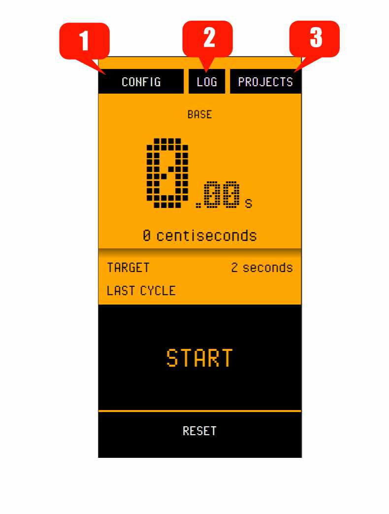
Imagen: Referencias 1–3.1
CONFIG
El botón CONFIG da acceso al panel de configuración de la aplicación.
Desde este apartado se definen los parámetros de trabajo del perfil activo, entre ellos:
el modo de cronometraje;
la unidad principal de medida;
el valor objetivo o target;
el idioma;
y otras opciones generales, como el uso de sonido.
La configuración se guarda asociada al proyecto activo, lo que permite adaptar CRONO a distintos procesos, estaciones o robots sin necesidad de reconfigurar la aplicación en cada uso.
2
LOG
El botón LOG abre el registro de tiempos medidos.
En este apartado se pueden consultar los ciclos registrados, visualizar el promedio de los tiempos y representar su evolución mediante una gráfica. También permite excluir el último ciclo del análisis cuando la medición se haya interrumpido antes de completar el proceso, así como exportar los datos para su tratamiento posterior.
El registro constituye la base de análisis de CRONO, ya que permite revisar de forma inmediata el comportamiento del ciclo medido y conservar la trazabilidad de los resultados.
3
PROJECTS
El botón PROJECTS permite gestionar los distintos perfiles de trabajo de la aplicación.
Cada proyecto puede almacenar de forma independiente:
su nombre;
la configuración de cronometraje;
la unidad de medida utilizada;
el target asociado;
y el historial de tiempos registrado.
Gracias a este sistema, es posible preparar perfiles específicos para diferentes estaciones automatizadas, robots o procesos, y cambiar entre ellos de forma rápida según la necesidad de la medición.
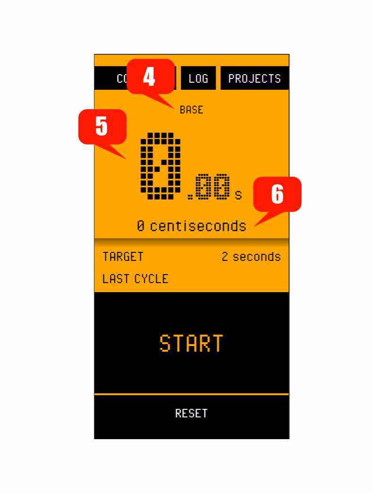
Imagen: Referencias 4–6.4
Perfil activo
Muestra el nombre del perfil de trabajo seleccionado.
Cada perfil permite identificar la estación automatizada, robot o proceso cuyos tiempos se están midiendo. En este ejemplo, el perfil activo es BASE.
5
Cronómetro principal
Muestra el tiempo transcurrido durante el ciclo de medición.
El valor se presenta en gran formato para facilitar su lectura a pie de máquina. La unidad principal puede configurarse en segundos o centésimas de minuto, según las necesidades del estudio de tiempos.
6
Unidad secundaria
Muestra simultáneamente el tiempo en la unidad alternativa, permitiendo consultar ambas medidas sin modificar la configuración.
De esta manera, es posible trabajar con segundos y centésimas de minuto y comparar sus valores durante la medición.
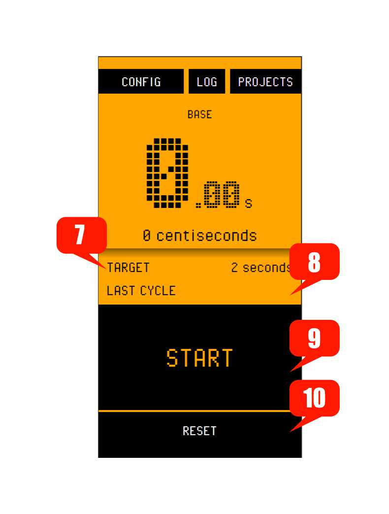
Imagen: Referencias 7–10.7
Tiempo objetivo (TARGET)
Muestra el tiempo de ciclo establecido como referencia para el perfil activo.
Este valor permite comparar las mediciones realizadas con el tiempo previsto para la estación automatizada o el robot.
El tiempo objetivo se expresa en la unidad principal seleccionada en la configuración.
8
Último ciclo (LAST CYCLE)
Muestra el tiempo registrado en el último ciclo completado.
Permite consultar inmediatamente el resultado de la medición anterior, facilitando la comparación entre ciclos consecutivos.
9
Botón START
Inicia el cronometraje del ciclo.
El botón principal permite controlar la medición mediante pulsaciones sucesivas, según el modo de funcionamiento seleccionado en la configuración.
Su gran superficie facilita el accionamiento rápido durante la observación de procesos automatizados.
10
Botón RESET
Permite reiniciar el cronómetro y devolver el contador a cero.
Se utiliza para preparar una nueva medición o descartar el tiempo transcurrido cuando sea necesario, de acuerdo con el modo de cronometraje seleccionado.
02
Configuración
Ajustes del cronometraje y preferencias.
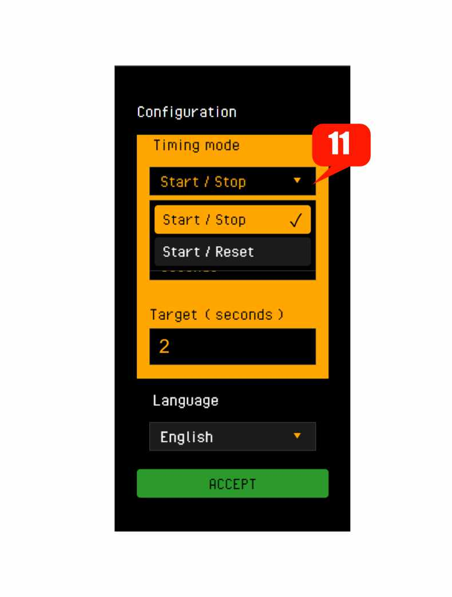
Imagen: Referencia 11.11
Modo de cronometraje (Timing mode)
Permite seleccionar el comportamiento del cronómetro según el tipo de medición que se desea realizar.
Start / Stop
Modo convencional de cronometraje. La primera pulsación inicia la medición y la siguiente detiene el contador, registrando el tiempo del ciclo.
Es adecuado para mediciones puntuales o procesos en los que es necesario iniciar y detener el cronómetro manualmente.
Start / Reset
Modo orientado a la medición de ciclos consecutivos en estaciones automatizadas y robots.
La primera pulsación inicia el cronómetro. Cada pulsación posterior registra el tiempo del ciclo completado y reinicia inmediatamente el contador, comenzando una nueva medición sin detener el cronometraje.
Este modo resulta especialmente útil para analizar procesos repetitivos de producción, ya que permite registrar ciclos sucesivos con una única pulsación entre mediciones.
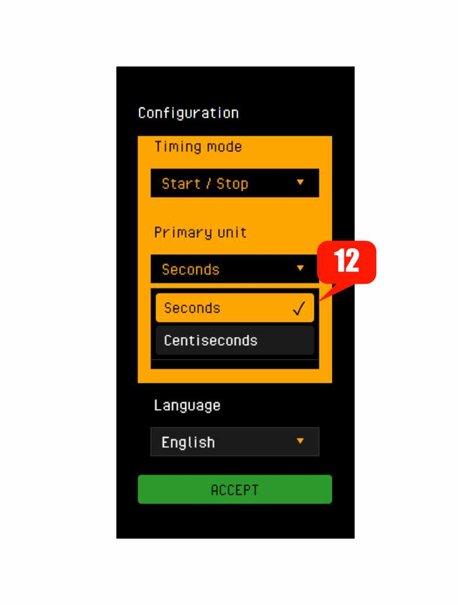
Imagen: Referencia 12.12
Unidad principal (Primary unit)
Permite seleccionar la unidad de tiempo utilizada como referencia principal durante las mediciones.
Seconds (segundos)
Muestra el tiempo en segundos, con una resolución de dos decimales.
Centiseconds (centésimas de minuto)
Muestra el tiempo en centésimas de minuto, una unidad utilizada habitualmente en estudios de tiempos y análisis de ciclos industriales.
Una centésima de minuto equivale a 0,6 segundos.
La unidad seleccionada se muestra en el contador principal, mientras que la unidad alternativa aparece debajo, en un tamaño más reducido.
El tiempo objetivo (target) también se expresa en la unidad principal seleccionada, manteniendo la coherencia entre las mediciones y los valores de referencia.
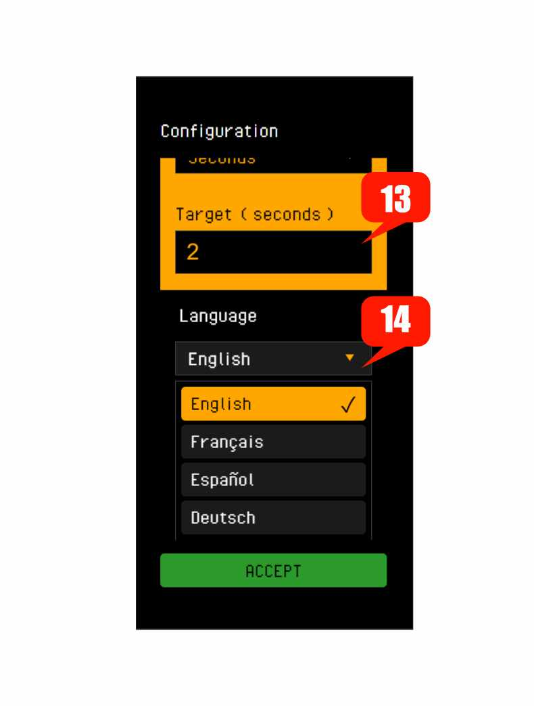
Imagen: Referencias 13–14.13
Tiempo objetivo (Target)
Permite establecer el tiempo de ciclo de referencia para el perfil de trabajo activo.
El valor se introduce en la unidad principal seleccionada, segundos o centésimas de minuto.
Este parámetro facilita la comparación entre los tiempos reales registrados y el tiempo previsto para el proceso, permitiendo identificar desviaciones respecto al objetivo establecido.
14
Idioma (Language)
Permite seleccionar el idioma de la interfaz de CRONO.
La aplicación dispone de cuatro idiomas:
Inglés
Francés
Español
Alemán
El idioma seleccionado se aplica a los menús, controles y mensajes de la aplicación, facilitando su utilización en entornos industriales internacionales.
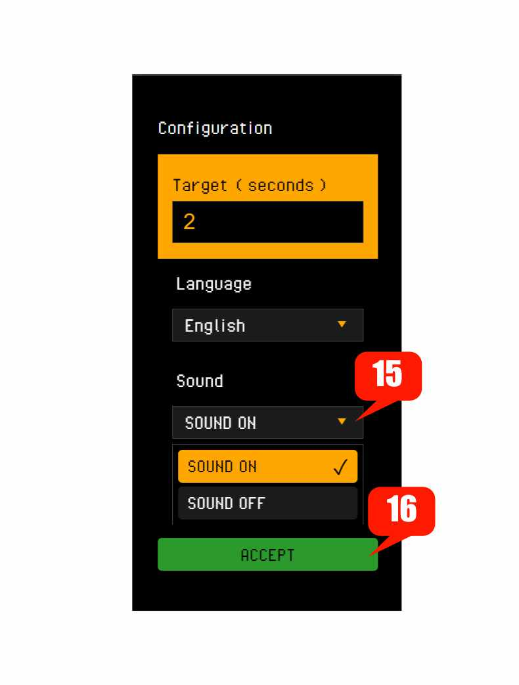
Imagen: Referencias 15–16.15
Sonido (Sound)
Permite activar o desactivar las señales acústicas de CRONO.
La aplicación dispone de tres tipos de sonido, diseñados para proporcionar información inmediata durante el cronometraje sin necesidad de consultar continuamente la pantalla.
Inicio de medición: señal acústica que confirma la puesta en marcha del cronómetro.
Ciclo dentro del objetivo: sonido de confirmación cuando el tiempo registrado es igual o inferior al tiempo objetivo (target).
Ciclo fuera del objetivo: sonido de advertencia cuando el tiempo registrado supera el valor establecido como objetivo.
Estas señales permiten identificar rápidamente el resultado de cada ciclo, facilitando el seguimiento de estaciones automatizadas y procesos robotizados.
SOUND ON activa las señales acústicas y SOUND OFF permite realizar las mediciones en silencio.
16
Confirmar configuración (ACCEPT)
Guarda los parámetros seleccionados y regresa a la pantalla principal del cronómetro.
Los cambios realizados se aplican a las siguientes mediciones, permitiendo adaptar el funcionamiento de CRONO a las necesidades del proceso analizado.
03
Registro de tiempos (LOG)
Consulta, análisis y exportación de mediciones.
El registro de tiempos permite consultar y analizar las mediciones realizadas durante una sesión de cronometraje. Incluye estadísticas, una representación gráfica de los ciclos y herramientas para exportar los resultados.
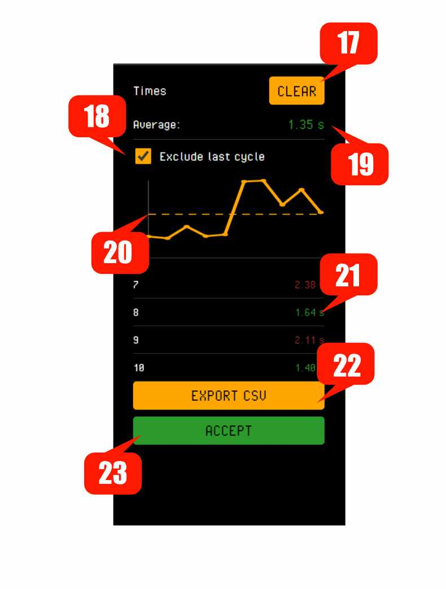
Imagen: Referencias 17–23.17
Borrar registro (CLEAR)
Elimina los tiempos registrados, permitiendo comenzar una nueva serie de mediciones.
Esta operación resulta útil al iniciar un nuevo estudio o repetir una toma de tiempos desde cero.
18
Excluir último ciclo (Exclude last cycle)
Permite excluir el último ciclo registrado del cálculo de los resultados.
Esta función es especialmente útil cuando la última medición corresponde a un ciclo incompleto, una interrupción del proceso o una toma de tiempos que no se desea considerar.
19
Tiempo medio (Average)
Muestra el promedio de los tiempos registrados, expresado en la unidad principal seleccionada.
El cálculo permite obtener una referencia del comportamiento general del proceso, reduciendo la influencia de las variaciones entre ciclos individuales.
20
Gráfica de tiempos
Representa visualmente la evolución de los tiempos de ciclo registrados.
La línea continua muestra las mediciones sucesivas, mientras que la línea discontinua indica el tiempo objetivo (target).
Esta representación permite identificar rápidamente variaciones, tendencias y desviaciones respecto al tiempo de referencia.
21
Tiempo de ciclo
Muestra los tiempos individuales registrados, ordenados por número de ciclo.
Los valores se presentan con un código de colores que facilita su interpretación:
Verde: tiempo igual o inferior al objetivo establecido.
Rojo: tiempo superior al objetivo establecido.
Esta identificación visual permite reconocer inmediatamente los ciclos que cumplen el tiempo previsto y aquellos que presentan desviaciones.
22
Exportar datos (EXPORT CSV)
Permite exportar el registro de mediciones a un archivo CSV, compatible con hojas de cálculo y herramientas de análisis de datos.
Esta función facilita el tratamiento posterior de los resultados, la elaboración de informes de productividad y la comparación de tiempos entre diferentes sesiones de trabajo.
23
Cerrar registro (ACCEPT)
Cierra la ventana del registro y regresa a la pantalla principal de CRONO.
Los tiempos registrados permanecen disponibles para su consulta y análisis posterior.
04
Gestión de proyectos (PROJECTS)
Perfiles de trabajo y datos almacenados.
CRONO permite organizar las mediciones mediante proyectos independientes, facilitando el trabajo con diferentes estaciones automatizadas, células robotizadas o procesos industriales.
Cada proyecto conserva su configuración y los tiempos registrados, permitiendo recuperar las condiciones de trabajo de cada estudio.
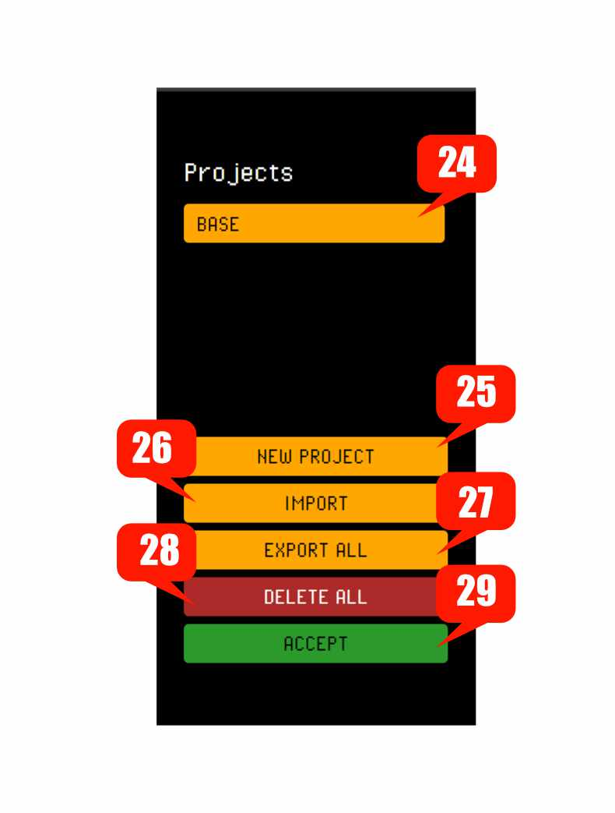
Imagen: Referencias 24–29.24
Lista de proyectos
Muestra los proyectos disponibles en la aplicación.
Al seleccionar uno de ellos, se accede a las opciones de gestión, desde las que es posible cargarlo, actualizarlo, cambiar su nombre, exportarlo o eliminarlo.
25
Nuevo proyecto (NEW PROJECT)
Permite crear un nuevo proyecto de trabajo.
Cada proyecto dispone de un nombre identificativo y puede mantener su propia configuración de cronometraje, tiempo objetivo y registro de mediciones.
26
Importar proyectos (IMPORT)
Permite incorporar proyectos previamente exportados desde CRONO.
Esta función facilita la recuperación de configuraciones y registros, así como el intercambio de proyectos entre dispositivos.
27
Exportar todos (EXPORT ALL)
Genera un archivo que contiene todos los proyectos almacenados en la aplicación, incluyendo sus configuraciones y registros de tiempos.
Es especialmente útil para realizar copias de seguridad, transferir datos a otro dispositivo o conservar el historial de los estudios realizados.
28
Eliminar todos (DELETE ALL)
Permite eliminar todos los proyectos y sus registros almacenados.
Esta operación requiere confirmación para evitar la pérdida accidental de información.
Importante: antes de realizar una eliminación general, se recomienda utilizar EXPORT ALL para conservar una copia de seguridad.
29
Cerrar (ACCEPT)
Cierra la ventana de gestión de proyectos y regresa a la pantalla principal de CRONO.
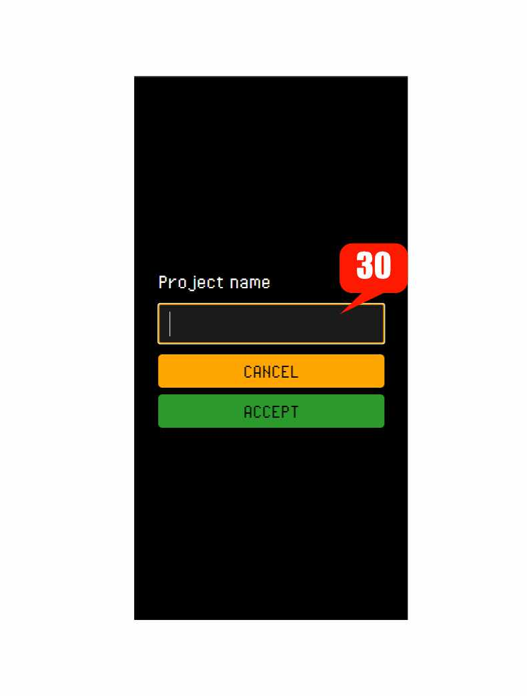
Imagen: Referencia 30.30
Nombre del proyecto (Project name)
Al seleccionar NEW PROJECT, CRONO solicita un nombre para identificar el nuevo proyecto.
Se recomienda utilizar una denominación que permita reconocer fácilmente la estación automatizada, célula robotizada o proceso que se va a analizar.
Por ejemplo: Línea 1 - Robot de soldadura.
Una vez introducido el nombre, el botón ACCEPT confirma la creación del proyecto, mientras que CANCEL permite regresar sin guardar los cambios.
Cada proyecto puede conservar su propia configuración de cronometraje y registro de tiempos, facilitando la organización de diferentes estudios de ciclos industriales.
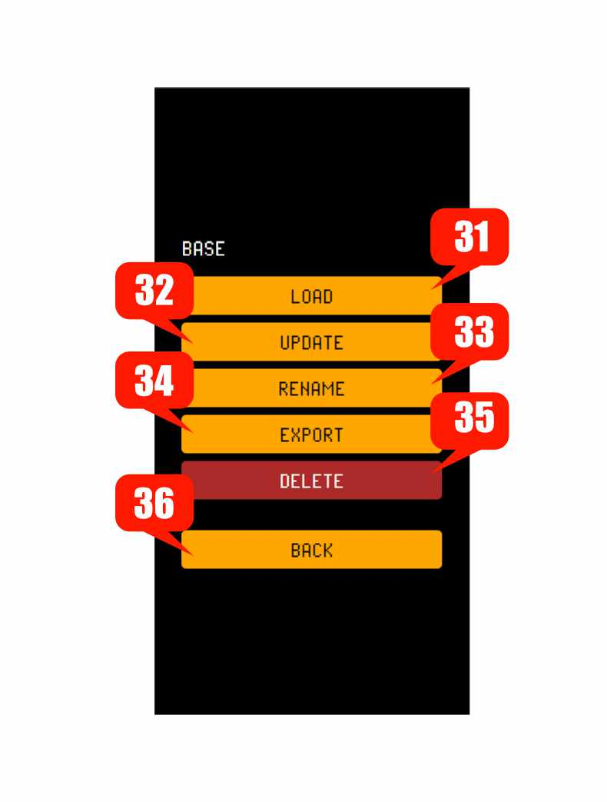
Imagen: Referencias 31–36.
Al seleccionar un proyecto de la lista, CRONO muestra las operaciones disponibles para administrar su configuración y sus datos.
31
Cargar proyecto (LOAD)
Activa el proyecto seleccionado para realizar mediciones.
CRONO recupera su configuración y su registro de tiempos, permitiendo continuar el estudio con los parámetros asociados a ese proyecto.
32
Actualizar proyecto (UPDATE)
Guarda la configuración actual de CRONO en el proyecto seleccionado, sustituyendo su configuración anterior.
Esta función permite aplicar los ajustes realizados a un proyecto existente sin necesidad de crear uno nuevo.
33
Cambiar nombre (RENAME)
Permite modificar el nombre del proyecto sin necesidad de crear otro.
Resulta útil para corregir denominaciones o adaptar la identificación de una estación, robot o proceso.
34
Exportar proyecto (EXPORT)
Genera un archivo con los datos del proyecto seleccionado, incluyendo su configuración y los tiempos registrados.
Permite realizar copias de seguridad, transferir el proyecto a otro dispositivo o compartirlo con otros usuarios de CRONO.
35
Eliminar proyecto (DELETE)
Elimina el proyecto seleccionado y sus registros asociados.
La aplicación solicita confirmación antes de ejecutar esta operación para evitar eliminaciones accidentales.
36
Volver (BACK)
Regresa a la lista de proyectos sin realizar ninguna operación.
00
Introduction
CRONO is a timing application specifically designed to analyse and measure cycle times in industrial automation environments.
Its purpose is to make it easy to measure the operating cycles of automated stations, robotic cells and repetitive industrial processes, providing a fast, precise and adaptable tool for shop-floor work.
The application measures times in both seconds and hundredths of a minute, a standard unit in industrial time studies, and lets you establish target values to assess cycle performance.
With work profiles, CRONO organizes measurements from different stations, robots and processes, keeping their settings and time records separate.
Recorded times can be exported for further analysis, supporting productivity studies, process optimization, line balancing and cycle-time monitoring.
The interface is designed for straightforward use on mobile devices, so measurements can be taken directly at the machine without interfering with operations.
CRONO combines ease of use, flexibility and industrial functionality in a tool intended for data collection under real production conditions.
And it even has a nice big button!
01
Main screen
The main controls and readouts of CRONO.
The main screen provides access to the essential functions of CRONO. From here you can configure timing, review recorded measurements and manage work profiles.
Figure: References 1–3.1
CONFIG
Opens the application configuration panel.
Here you can define the active profile’s timing mode, primary time unit, target time, language and sound settings.
The configuration is associated with the active project, allowing CRONO to be adapted to different processes, stations or robots without setting everything up again each time.
2
LOG
Opens the list of recorded cycle times.
You can review measured cycles and their average, view their development in a chart, exclude the last cycle from the analysis if the measurement was interrupted, and export data for further processing.
The log provides an immediate overview of cycle behaviour and a record of the measurements.
3
PROJECTS
Opens work-profile management.
Each project can independently store its name, timing configuration, chosen time unit, target and recorded cycle history.
This lets you prepare separate profiles for different automated stations, robots or processes and switch between them as needed.
Figure: References 4–6.4
Active profile
Displays the name of the currently selected work profile.
A profile identifies the station, robot or process being measured. In this example, the active profile is BASE.
5
Main stopwatch
Displays elapsed time during the measurement cycle.
The large digits are easy to read at the machine. The primary unit can be configured as seconds or hundredths of a minute.
6
Secondary unit
Simultaneously displays the time in the alternative unit without changing the settings.
You can therefore consult and compare seconds and hundredths of a minute throughout the measurement.
Figure: References 7–10.7
Target time (TARGET)
Displays the reference cycle time set for the active profile.
This allows measured times to be compared with the planned cycle time for a station or robot.
The target is expressed in the selected primary time unit.
8
Last cycle (LAST CYCLE)
Displays the time recorded for the most recently completed cycle.
It allows immediate comparison between consecutive measurements.
9
START button
Starts cycle timing.
Successive presses of the large main button control the measurement according to the timing mode selected in the settings.
Its large surface makes it easy to operate quickly while observing automated processes.
10
RESET button
Resets the stopwatch to zero.
Use it to prepare another measurement or discard the elapsed time when required, according to the selected timing mode.
02
Configuration
Set how cycle times are recorded and displayed.
Figure: Reference 11.11
Timing mode
Selects how the stopwatch behaves for the type of measurement being performed.
Start / Stop: The first press starts timing; the next stops the counter and records the cycle time. Suitable for individual measurements and processes that need manual starting and stopping.
Start / Reset: The first press starts timing. Every subsequent press records the completed cycle and immediately restarts the counter, with no pause between cycles. This is particularly useful for repetitive production processes.
Figure: Reference 12.12
Primary unit
Selects the time unit used as the main reference during measurements.
Seconds: Displays time in seconds with two decimal places.
Centiseconds (hundredths of a minute): A unit widely used in industrial time studies. One hundredth of a minute equals 0.6 seconds.
The chosen unit appears in the large main display; the other unit is shown below at a smaller size. The target time uses the selected primary unit as well.
Figure: References 13–14.13
Target time
Sets the reference cycle time for the active work profile.
Enter the value in the selected primary unit, either seconds or hundredths of a minute.
This enables comparison between recorded cycle times and the planned time, making deviations from the target easier to identify.
14
Language
Selects the language used throughout CRONO.
The application supports English, French, Spanish and German.
The selected language applies to menus, controls and messages, allowing use in international industrial environments.
Figure: References 15–16.15
Sound
Enables or disables CRONO’s audible signals.
Three sounds provide immediate feedback without requiring constant attention to the display:
Measurement start: Confirms that the stopwatch has started.
Cycle within target: Confirms that the recorded time is equal to or below the target.
Cycle above target: Warns that the recorded time exceeds the target.
SOUND ON enables these signals; SOUND OFF allows silent operation.
16
Confirm settings (ACCEPT)
Saves the selected parameters and returns to the main stopwatch screen.
Changes apply to subsequent measurements, adapting CRONO to the process being analysed.
03
Time log (LOG)
Review, analyse and export cycle-time measurements.
The log lets you examine cycle times measured during a timing session. It includes statistics, a chart and export tools.
Figure: References 17–23.17
Clear log (CLEAR)
Deletes the recorded cycle times, allowing a new series of measurements to begin.
Useful when starting a new study or repeating a time study from zero.
18
Exclude last cycle
Excludes the most recently recorded cycle from the results calculation.
Useful when the last measurement was incomplete, the process was interrupted, or a recorded time should not be included.
19
Average time (Average)
Displays the average of the recorded cycle times in the selected primary unit.
This provides a general reference for process behaviour and reduces the influence of differences between individual cycles.
20
Cycle-time chart
Plots how recorded cycle times change throughout the measurement session.
The solid line represents successive measurements, while the dashed line marks the target time.
The chart makes variations, trends and deviations from the reference time easy to identify.
21
Cycle time
Lists individual recorded times by cycle number.
Green: Time equal to or below the target.
Red: Time above the target.
This colour coding makes compliant cycles and deviations immediately visible.
22
Export data (EXPORT CSV)
Exports the measurement log to a CSV file compatible with spreadsheets and data-analysis tools.
This supports subsequent analysis, productivity reports and comparisons between measurement sessions.
23
Close log (ACCEPT)
Closes the log and returns to the CRONO main screen.
Recorded cycle times remain available for later review and analysis.
04
Project management (PROJECTS)
Manage work profiles and stored data.
CRONO organizes measurements into independent projects for automated stations, robotic cells and industrial processes. Each project retains its settings and time records.
Figure: References 24–29.24
Project list
Displays the projects available in the application.
Select a project to open its management options: load, update, rename, export or delete.
25
New project (NEW PROJECT)
Creates a new work project.
Each project has an identifying name and can retain its own timing settings, target and measurement log.
26
Import projects (IMPORT)
Imports projects previously exported from CRONO.
This enables recovery of settings and records and the transfer of projects between devices.
27
Export all (EXPORT ALL)
Creates a file containing every stored project, including their settings and cycle-time records.
Useful for backups, transferring data to another device or archiving completed studies.
28
Delete all (DELETE ALL)
Deletes all stored projects and their associated records.
Confirmation is required to prevent accidental data loss.
Important: Use EXPORT ALL first if you want to keep a backup.
29
Close (ACCEPT)
Closes project management and returns to the CRONO main screen.
Figure: Reference 30.30
Project name
When NEW PROJECT is selected, CRONO asks for a name to identify the new project.
Choose a name that clearly identifies the automated station, robotic cell or process, for example: Line 1 - Welding robot.
Press ACCEPT to create the project or CANCEL to return without saving.
Each project can store its own timing settings and cycle-time records.
Figure: References 31–36.
Select a project from the list to view the available operations for managing its settings and data.
31
Load project (LOAD)
Activates the selected project for measurements.
CRONO restores its configuration and recorded times so that the study can continue with the settings associated with that project.
32
Update project (UPDATE)
Saves CRONO’s current configuration into the selected project, replacing that project’s previous configuration.
This applies current settings to an existing project without creating a new one.
33
Rename project (RENAME)
Changes the project name without creating another project.
Useful for correcting or updating the identification of a station, robot or process.
34
Export project (EXPORT)
Creates a file containing the selected project’s configuration and recorded times.
Useful for backups, transferring a project to another device or sharing it with other CRONO users.
35
Delete project (DELETE)
Deletes the selected project and its associated records.
The application requests confirmation before proceeding to prevent accidental deletion.
36
Back (BACK)
Returns to the project list without performing any operation.